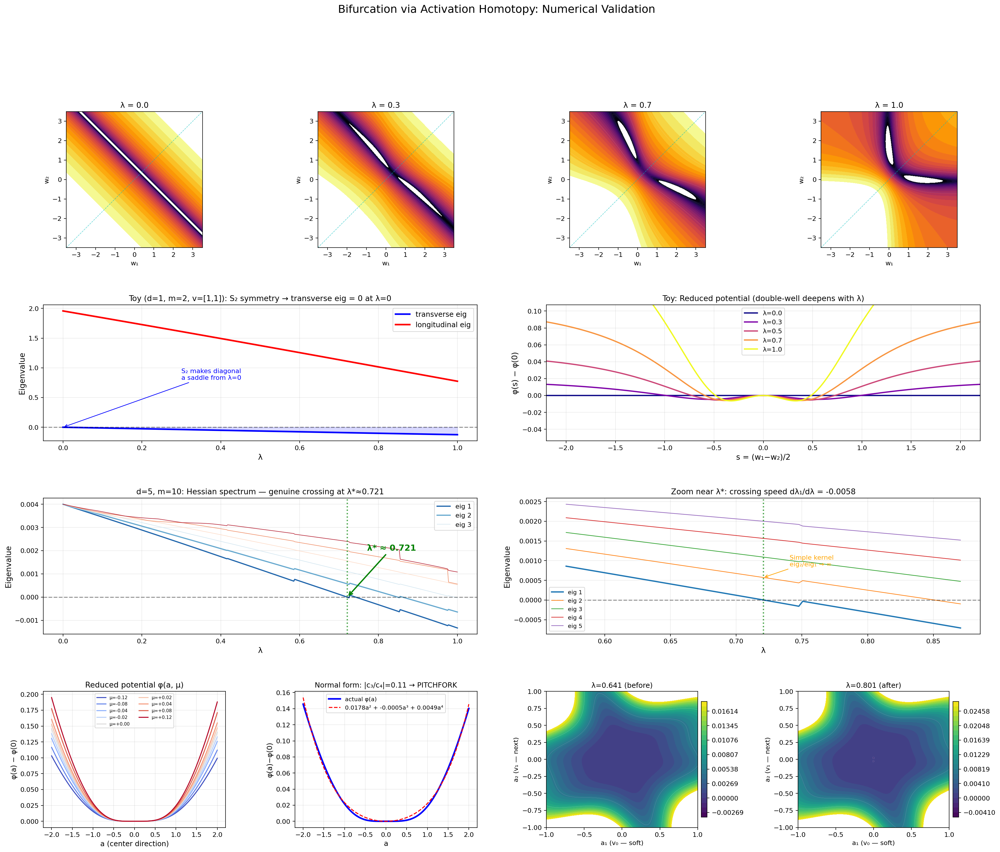

The foundational algebraic theorems are formally verified in the Lean 4 theorem prover.
Abstract
We study how the optimization landscape of a neural network deforms as a non-linear activation is introduced through a smooth homotopy. Working first in an abstract local setting - a smooth one-parameter family of objective functions together with a critical branch that loses non-degeneracy through a simple Hessian kernel - we show via Lyapunov-Schmidt reduction that the local transition is controlled by the classical codimension-one normal forms (transcritical or pitchfork) and that the associated topology change is governed by Morse-theoretic handle attachment. We then move beyond the abstract framework and verify these assumptions for a concrete two-layer architecture. We prove that bilinear overparameterization creates an (m-1)d-dimensional Hessian kernel at the linear endpoint, which Tikhonov regularization lifts to a floor alpha > 0; the activation homotopy softens this floor, yielding an explicit bifurcation point lambda* approximately equal to alpha/|lambda_1'(0)|. We derive the eigenvalue-softening rate as a functional of activation derivatives and data moments, and prove that the near-pitchfork normal form (|g_aa/g_aaa| much less than 1) is a structural consequence of sigma''(0)=0 for tanh-like activations. The bifurcation point scales as lambda* proportional to alpha m with network width, connecting the framework to the NTK regime: at large m the landscape reorganization is pushed past lambda=1 and the linearized picture prevails. The foundational algebraic theorems have been formally verified in the Lean 4 theorem prover, and theoretical predictions computed for widths m in {3, 5, 10, 20, 50, 100} exhibit quantitative agreement with the abstract framework.
Problem
It is not well understood how the optimization landscape of a neural network transitions from the linear regime to the non-linear regime, or what controls the bifurcation geometry at this transition.
Approach
The authors introduce a smooth homotopy parameterized by lambda in [0,1] from linear to non-linear networks and apply Lyapunov-Schmidt reduction to characterize the local transition via codimension-one normal forms (transcritical or pitchfork). They prove for a two-layer architecture that the bifurcation point scales as lambda* proportional to alpha*m with width m, connecting to the NTK regime. Foundational algebraic theorems are formally verified in Lean 4.

Figure 1. Master summary of numerical results. Row 1: Loss landscape contours for the symmetric toy model ( d=1 , m=2 , v=[1,1] ) at four values of \lambda ; the diagonal w_{1}=w_{2} is marked in cyan. Row 2, left: Hessian eigenvalues along the diagonal branch showing S_{2} -induced zero transverse eigenvalue at \lambda=0 . Row 2, right: Reduced potential along the anti-diagonal, showing monotonic
Results
The bifurcation point lambda* scales linearly with width m and regularization strength alpha, so at large width the landscape reorganization is pushed past lambda=1 and the linearized (NTK) picture prevails. Numerical predictions for widths m in {3, 5, 10, 20, 50, 100} exhibit quantitative agreement with the theoretical framework. The near-pitchfork normal form is shown to be a structural consequence of sigma''(0)=0 for tanh-like activations.